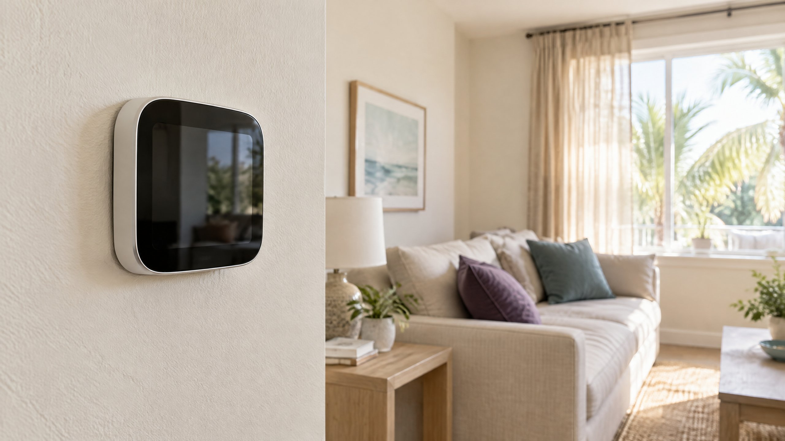

What Does the Thermostat Number Actually Mean?
A cooling setpoint is the indoor temperature you want the system to reach and maintain. It is not the temperature of the air leaving a supply vent. Nor is it a dial that directly commands colder refrigerant every time you lower the number. The thermostat and equipment work together to respond to the difference between the sensed room temperature and that target. Programmable models can change the target on a schedule; smart models may also consider occupancy. [2]
For a conventional single-stage system, the compressor has an on/off cooling call rather than a homeowner-adjustable range of output. Once that cooling call is active, selecting a much colder target does not create another cooling stage. The utility South Central Power explains why an extra-low setting can instead keep cooling beyond the temperature you actually wanted. [1] That fixed-capacity explanation should not be generalized to every modern AC.
A Warm-Home Example: Target Versus Speed
Suppose, as a hypothetical example, you return to an 80°F home and want 75°F. Selecting 65°F is a request to reach 65°F, not a promise to reach 75°F sooner. On the single-stage system described above, either setting can already call for cooling. The extra-low target mainly changes when that call ends. These numbers illustrate the distinction; they are not recommended comfort settings or a prediction of your home's cooling time. [1]
| Your choice | What it requests | Useful interpretation |
|---|---|---|
| Select the temperature you want | Cooling toward that indoor target | Observe whether the room temperature is trending toward it. |
| Select a much colder target | Cooling toward a lower endpoint | Do not treat the larger temperature gap as guaranteed faster recovery. |
| Use a supported schedule or recovery feature | A planned change in target or an earlier start | Follow the thermostat instructions rather than improvising an extreme setting. |
Cooling time depends on the home's heat gain, starting conditions, available equipment capacity, and air distribution. PNNL describes how equipment must match the home's cooling load and how refrigerant transfers heat outside. [3] A lower display number cannot remove those physical limits. There is no single minutes-per-degree rule that diagnoses every Tampa home.
What About Two-Stage or Variable-Capacity AC?
Some modern systems can change compressor output instead of simply switching one capacity on and off. PNNL explains that variable-speed compressors and related controls can modulate refrigerant flow to match changing cooling demand. [3] Depending on the equipment and compatible thermostat, a different demand may produce a different response. That is why “every AC always runs at the same speed” is an incomplete explanation.
Even then, a thermostat setpoint is not a guaranteed fast-cool override. Check the operating instructions for your particular controls, including any documented recovery function. Do not alter installer settings to force a stage. If you need the broader equipment comparison, use our separate single-stage, two-stage, and variable-speed AC guide; this article is about operating the system you already have.
A Better Return-Home Routine
Choose the temperature you actually want, confirm the thermostat is in cooling mode, and check whether a temporary hold or schedule is changing that target. If your thermostat supports adaptive recovery, it may learn when to begin changing the temperature before a scheduled occupied period. DOE's Building Science Education resource describes this feature; it is not present on every programmable model. [2] Planning the start is different from making the equipment cool faster.
Reduce avoidable heat entering the room by shading sunny windows and keeping exterior doors and windows closed during cooling. The utility's guidance also recommends curtains and clear airflow. [1] Keep your observations simple: note the starting temperature, intended target, time, and whether cooling is being requested. Change one setting deliberately rather than repeatedly chasing a lower number.
The indoor fan setting is a separate decision. “On” can run the blower even when the compressor is not cooling; it does not turn an extra-low target into added compressor capacity. Our Auto versus On fan-setting article addresses circulation and humidity rather than thermostat temperature targets.
Why Feeling Cooler Is Not Only a Temperature Question
In Tampa and North Tampa, a room can reach the chosen temperature yet still feel clammy. That observation deserves a humidity discussion, not an automatic instruction to keep lowering the setpoint. PNNL distinguishes cooling the air from removing moisture and explains how equipment sizing and run behavior affect that balance. [3] Do not diagnose a moisture problem from the thermostat number alone.
If the temperature is reaching its target but comfort is not improving, note whether the concern is dampness, uneven rooms, or absent airflow. Our separate humid-home article can help frame that conversation. This thermostat myth does not establish a universal away setting, humidity target, or recommendation to turn the system off while you are away.
When Lowering the Target Is Masking a Cooling Problem
A system that used to reach your ordinary setting but now does not needs a different question: what changed in its cooling performance? Check an accessible filter according to the equipment instructions, and look for furniture blocking supply or return openings. If filter fit or replacement is unclear, ask about air filter replacement. ENERGY STAR identifies filter care, thermostat checks, coils, airflow, refrigerant, and operating controls as relevant maintenance items. [4]
For absent cooling, recurring shutdowns, visible ice, leaking water, or a persistent change from normal performance, request AC repair rather than repeatedly reducing the target. A technician can compare the cooling call with actual equipment operation and assess the relevant airflow and cooling components. If the displayed target changes unexpectedly or the control does not respond as intended, ask about thermostat repair. Neither symptom proves that the thermostat itself needs replacement.
Do not open electrical compartments, bypass controls, or attempt refrigerant adjustments. If the unit runs without making the room cooler, our running-but-not-cooling checklist covers that separate symptom. Tell the service provider what the thermostat displayed and what the equipment actually did; an extreme setpoint is not a diagnostic test.
Frequently Asked Questions
Does setting the thermostat to 60°F make the vent air colder?
The setpoint is a desired room temperature, not a selected supply-air temperature. On a conventional single-stage AC, lowering it far below your intended comfort setting does not add cooling capacity. Modern controls can vary equipment operation, so follow your system's instructions rather than treating 60°F as a universal boost.
Should I keep lowering the target if the room temperature is not falling?
No. Choose your intended target and check the cooling mode, schedule, accessible filter, and airflow obstructions. If cooling remains absent or performance has changed persistently, request an equipment assessment. A progressively lower number does not identify the failed component.
Is scheduled recovery the same as cooling faster?
No. A supported recovery feature can begin conditioning ahead of a scheduled temperature change. It plans when cooling starts; it does not promise unlimited capacity or a fixed cooling time. The available behavior depends on the thermostat and compatible equipment.
Does this apply to a Heat Pump in cooling mode?
A Heat Pump in cooling mode uses the same basic heat-transfer process as an air conditioner. Its response still depends on the equipment and controls. Do not apply this cooling explanation to heating-mode setbacks or auxiliary-heat operation, which are separate questions.
Sources
- South Central Power: True or false? Setting the thermostat lower cools your home faster. Utility explanation of the myth; fixed-capacity wording is qualified here.
- U.S. Department of Energy Building Science Education: HVAC Programmable Thermostats. Schedules, occupancy features, and adaptive recovery.
- Pacific Northwest National Laboratory, Building America Solution Center: Air Conditioning. Heat transfer, load matching, humidity, and modulating equipment.
- ENERGY STAR: Maintenance Checklist. Thermostat, filter, airflow, coil, refrigerant, and control checks.
Editorial Review & Local Context
Published by On The Way Heating & Air using the sources above, checked for this October 9, 2026 publication. This is general homeowner guidance, not a diagnosis or a claim of a named technician's inspection. On The Way is a local, family-rooted business; Dustin Miller began working in HVAC with his father in 2006. For Tampa and North Tampa service, describe your current cooling behavior and thermostat settings so the next step addresses the actual problem.